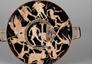

Theseus and his Labours
Theseus’ mother is the daughter of king Pittheus of Troezen, Aethra. In one version of the myth, Theseus is the son of Poseidon and therefore semi-divine. An alternate version makes him the son of Aegeus, the king of Athens and descendant of the founders of the city: this version may be a later attempt to connect Theseus to Athens. Aegeus sleeps with Aethra in Troezen and gives instructions to her when he leaves for Athens that her child must be brought up without knowing who is father was. If the child is a boy, he should be sent to Athens when he can lift up a heavy rock, under which Aegeus leaves a sword and a pair of sandals as recognition tokens (such tokens of recognition are common devices in Greek and Roman myths).
It is almost certain that stories about Heracles had a direct influence on the myths surrounding Theseus. We will see in the next Essential Element that Heracles, as a great hero, must complete a certain number of labours. Theseus too must complete labours on his way to Athens and afterward, some of which overlap explicitly with the labours of Heracles. Once Theseus is old enough to retrieve the sandals and sword from under the rock, he sets off for Athens. On his way, he must complete six tasks, in each instance ridding the countryside of a nuisance. The six labours are the following:
1) At Epidaurus he kills Periphetes, the son of Hephaestus who is armed with a club.
2) In Corinth he kills the robber Sinis (also known as ‘Pityocamptes’, the ‘bender of pine trees’) who kills people by bending trees to the ground, tying his victim to both trees and then letting them go.
3) Near the village of Crommyon, he kills a great sow.
4) At the cliffs of Sciron (named after the villain), he kills Sciron, who would make all who wanted to pass wash his feet, at which point he kicked them over the cliffs to be eaten by a large man-eating turtle. Theseus instead throws him to the turtle.
5) At Eleusis he kills Cercyon, defeating him in wrestling by lifting him in the air and throwing him to the earth.
6) Between Eleusis and Athens he then kills Procrustes, who made travellers lie on a bed; if they were too long he cut them to size with a saw, and if they were too short he hammered them to stretch them. Theseus kills him with the saw and hammer.
{kind=link}
It is undoubtedly the case that Theseus’ most famous labour is his killing of the Minotaur,but these labours were also popular in Attica. On this ancient vase, for example, we see the killing of the Minotaur represented in the centre of the vase, with the labours on the way from Troezen to Athens surrounding this (see image 1).